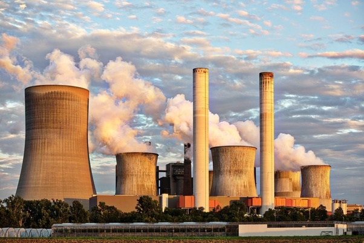

With the coming of the Industrial Revolution, humans were able to advance further into the 21st century. Technology developed rapidly, science became advanced and the manufacturing age came into view. With all of these came one more effect, industrial pollution. Earlier, industries were small factories that produced smoke as the main pollutant.
However, since the number of factories were limited and worked only a certain number of hours a day, the levels of pollution did not grow significantly. But when these factories became full scale industries and manufacturing units, the issue of industrial pollution started to take on more importance.
Any form of pollution that can trace its immediate source to industrial practices is known as industrial pollution. Most of the pollution on the planet can be traced back to industries of some kind. In fact, the issue of industrial pollution has taken on grave importance for agencies trying to fight against environmental degradation. Countries facing sudden and rapid growth of such industries are finding it to be a serious problem which has to be brought under control immediately.
Industrial pollution takes on many faces. It contaminates many sources of drinking water, releases unwanted toxins into the air and reduces the quality of soil all over the world. Major environmental disasters have been caused due to industrial mishaps, which have yet to be brought under control. Below are few of the causes of industrial pollution that have resulted in environment degradation.
Industrial pollution is generally referred to the undesirable outcome when factories (or other industrial plants) emits harmful by-products and waste into the environment such as emissions to air or water bodies (water pollution), deposition on landfills etc (land pollution) or emission of toxic chemicals into the atmosphere (air pollution).
This form of pollution has been exacerbated and aggravated by industrial revolution.

What is pollution?
Pollution is a necessary evil of all development. Due to lack of development of a culture of pollution control, there has resulted a heavy backlog of gaseous, liquid and solid pollution in environment. It has to be cleaned. Pollution control is a recent environmental concern. Pollution is a man-made problem, mainly of effluent countries.
The developed countries have been exploiting every bit of natural resource to convert them into goods for their comfort, and to export them to needy developing world. In doing so, the industrialized countries dump lot of materials in their environment which becomes polluted. In one way pollution has been “exported” to developing countries and around the world.